Deux grandes familles
Structure : les éléments et les relations. Comportement : les actions, les interactions et les changements.
MODÉLISER · COMPRENDRE · COMMUNIQUER
Support de cours
Nicolas FIGAY
Année 2026–2027
Comprendre pourquoi et pour qui modéliser, et savoir mobiliser UML au bon moment d’un projet.
De la diversité des méthodes orientées objet à un langage standardisé, partageable entre personnes, organisations et outils.
Méthode de conception orientée objet, très utilisée pour la structuration logicielle.
Object Modeling Technique : une approche pour modéliser structure, comportement et flux d’information.
Approches centrées sur les cas d’utilisation pour relier besoins, acteurs et système.
Multiplication des notations, apprentissages fragmentés, échanges difficiles et outils hétérogènes.
Éviter de confondre les origines orientées objet, l’adoption OMG, les versions d’UML et sa normalisation ISO.
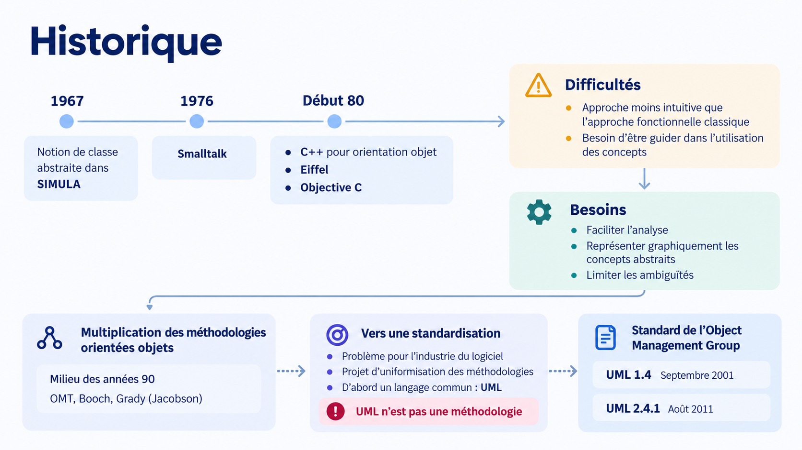
La distinction est essentielle : un langage définit des concepts et des notations ; une méthode organise une démarche de travail.
Apprendre UML ne revient pas à apprendre une méthodologie unique : on apprend un langage mobilisable dans plusieurs démarches d’analyse, de conception et de développement.
UML est gouverné par un organisme de standardisation ; le langage est documenté et partageable, indépendamment d’un éditeur particulier.
Un outil UML peut être libre, propriétaire ou hybride. Le statut du logiciel n’épuise pas la question du standard lui-même.
Qu’un langage soit standardisé ne garantit pas, à lui seul, des échanges parfaits entre tous les outils : l’interopérabilité dépend aussi des implémentations.
Sans entrer dans le détail des spécifications, il est utile de savoir dans quel ensemble UML s’inscrit.
Langage de modélisation.
Métamodélisation : structure des langages de modèle.
Échange de données de modèles.
Contraintes formelles sur les modèles.
Représentation des processus et méthodes.
Transformations de modèles.
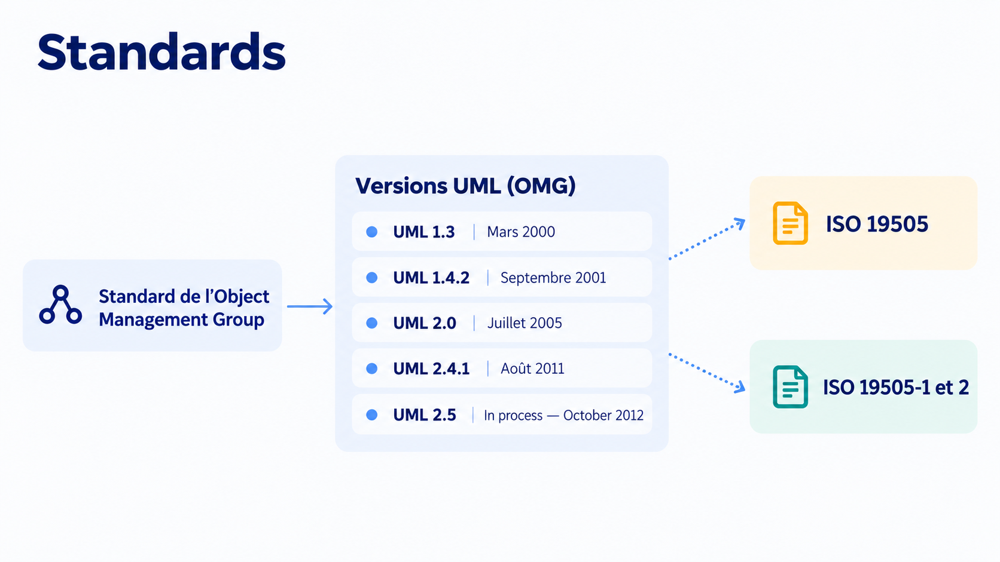
Un langage commun ne sert pas seulement à dessiner : il crée une base de compréhension partagée entre personnes et une base de travail exploitable — partiellement — par les outils.
La représentation visuelle n’est qu’une facette du langage de modélisation.
Notation partagée, sens commun des relations, discussions entre métiers et disciplines, transmission et critique.
Éléments typés, propriétés, contraintes et relations manipulables : contrôle, recherche, transformations et échanges.
Communication + exploitation informatique : construire un patrimoine de connaissances durable et réutilisable.
Qu’est-ce que l’ordinateur conserve et comprend réellement ?
Formes, traits et textes. Utile pour communiquer, sans connaissance obligatoire du sens UML.
PlantUML ou Mermaid décrivent des figures par du texte. Un rendu valide n’implique pas un modèle UML complet.
Référentiel d’éléments UML identifiés, relations et propriétés partageables entre vues, éventuellement échangeables en XMI.
Au-delà de la qualité du dessin : enjeux organisationnels et industriels.
Vocabulaire commun, vues reliées, règles partagées, vérification et traçabilité des changements.
Réduire l’enfermement fournisseur et préparer migration, archivage et gestion de l’obsolescence.
Partager des connaissances entre équipes, organisations, disciplines et outils hétérogènes.
Un bon diagramme ne prouve pas qu’un modèle est juste ou transférable.
Les constructions utilisées suivent-elles les conventions, concepts et contraintes applicables d’UML ?
Les outils savent-ils échanger le contenu du modèle, avec ses identités et ses relations, sans perte majeure ?
Le modèle répond-il à une question réelle, pour un destinataire donné, à un coût acceptable ?
De la norme aux questions que l’on cherche à résoudre
Structure : les éléments et les relations. Comportement : les actions, les interactions et les changements.
Un système peut être décrit par des modèles conceptuels, des architectures, des instances et des déploiements.
Chaque diagramme éclaire un aspect du système : aucun diagramme n’est une description exhaustive.
Structure et comportement : deux familles complémentaires
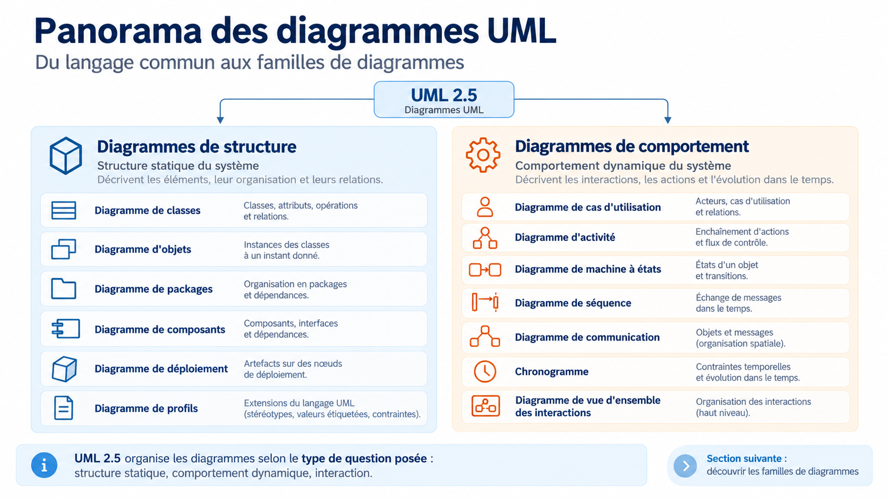
Distinguer les familles normatives des variantes pédagogiques
Classes, objets, packages, structure composite, composants, déploiement, profils.
Cas d’utilisation, activités, machines à états.
Séquence, communication, vue d’ensemble des interactions, chronogramme : des diagrammes de comportement spécialisés.
Certaines appellations de supports anciens désignent des vues ou des usages et non des types de diagrammes formellement distincts.
Quels éléments composent le système et comment sont-ils reliés ?
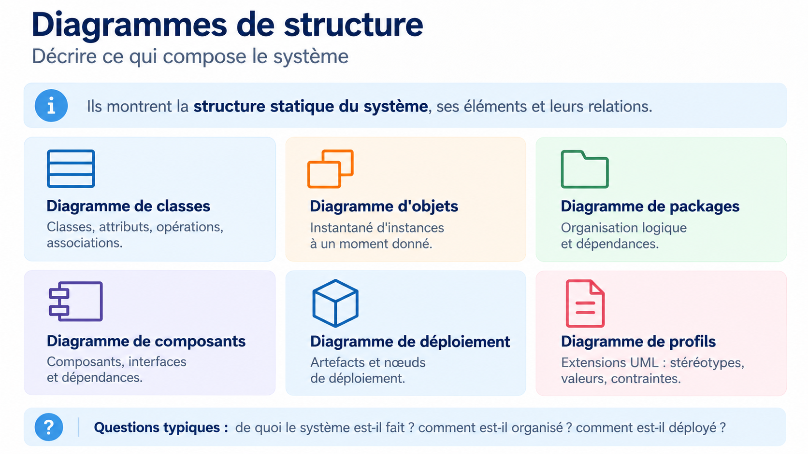
Les diagrammes ne décrivent pas tous le même niveau d’abstraction
Classificateurs, attributs, opérations, associations, généralisations et contraintes.
Instances, valeurs et liens observables à un instant donné : vue concrète d’un modèle.
Organisation, dépendances, regroupements et séparation des responsabilités.
Structure interne d’un classificateur : parties, ports et connecteurs.
Modules, interfaces fournies et requises ; dépendances et réutilisation.
Nœuds et artefacts déployés ; extension d’UML par stéréotypes et contraintes.
Passer de l’architecture logique à son environnement d’exécution
Décrire les types de nœuds, d’artefacts et les configurations possibles, sans identifier de machines particulières.
Montrer des nœuds et des artefacts précis, par exemple une installation de production.
En UML 2, les artefacts sont déployés sur des nœuds ; ils peuvent manifester des composants.
Une vue réseau peut s’exprimer au moyen d’un diagramme de déploiement ; un profil adapte le vocabulaire au domaine.
Actions, transitions d’état et interactions dans le temps
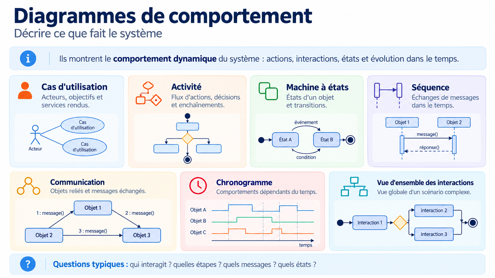
Le diagramme dépend de ce que l’on souhaite expliquer
Quels services le système rend-il à ses acteurs ? Les objectifs sont observables depuis l’extérieur.
Dans quel ordre des actions se déroulent-elles ? Quelles décisions et quels flux les relient ?
Quels états un élément traverse-t-il ? Quels événements et conditions déclenchent les transitions ?
Quels messages sont échangés entre les participants, et dans quel ordre ?
Toutes les interactions ne s’expliquent pas avec la même représentation
Met l’accent sur l’ordre temporel des messages entre lignes de vie.
Met en avant les liens entre participants et numérote les messages.
Orchestre des interactions comme un flux de contrôle à haut niveau.
Fait apparaître les variations d’état ou de valeur sur un axe temporel.
Distinguer la description générale et une configuration concrète
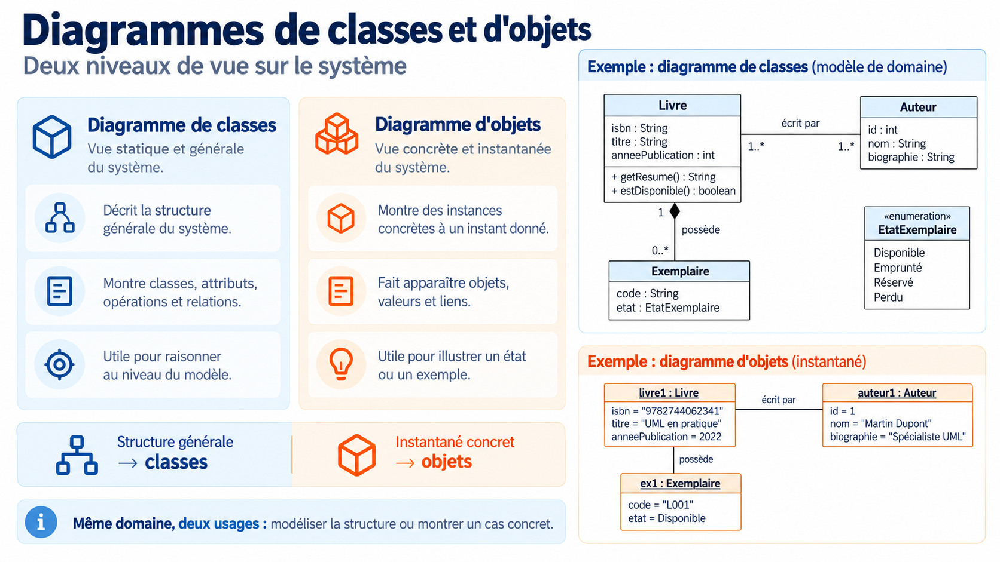
Faire le lien entre modèle de classes et exemples d’instances
Définit des propriétés et des relations applicables à plusieurs livres.
Représente une instance identifiable possédant des valeurs particulières.
Relation déclarée entre classificateurs dans le modèle de classes.
Relation effective entre des instances dans une représentation d’objets.
Exprime une contrainte sur les nombres d’instances reliées, à vérifier dans le domaine.
« Livre », « Exemplaire » et « Auteur » ne désignent pas les mêmes concepts métier.
Comprendre interfaces, dépendances et architecture modulaire
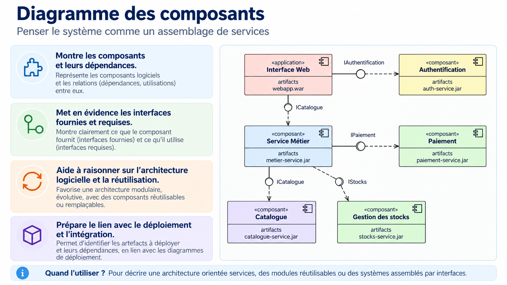
L’architecture des composants n’est pas identique à la topologie de déploiement
Encapsule une fonctionnalité ; il expose des interfaces et peut en exiger d’autres.
Un contrat déclare ce qui est mis à disposition ou nécessaire pour fonctionner.
Permet de discuter les dépendances, la substitution et la réutilisation de modules.
Les artefacts logiciels qui réalisent les composants peuvent ensuite être déployés sur des nœuds.
Choisir un point de vue utile plutôt qu’un dessin séduisant
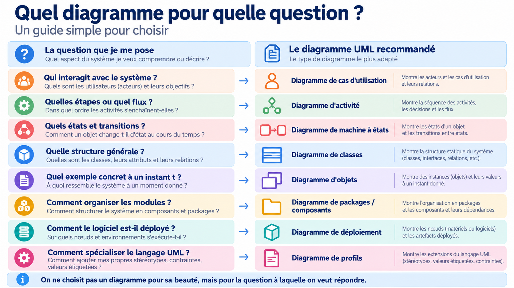
La qualité du modèle se juge par rapport au besoin du destinataire
Cas d’utilisation : services et acteurs.
Classes : structure du domaine.
Objets : instances et valeurs.
Activités : actions, décisions et flux.
Séquence ou communication : messages entre participants.
Déploiement : artefacts et nœuds.
Du dessin d’un diagramme à un véritable patrimoine de modèles
Des formes, du texte, des connexions et des mises en page.
Une source textuelle génère une représentation graphique.
Des éléments identifiés, typés, reliés et réutilisables dans plusieurs vues.
Plusieurs familles d’outils soutiennent la même notation, avec des finalités très différentes.
Même notation visuelle, capacités très différentes
PowerPoint, draw.io/diagrams.net, Visio, yEd : placement manuel ou automatique.
PlantUML et d’autres langages textuels produisent des images à partir d’une source.
Référentiel de modèles, propriétés, contraintes et diagrammes synchronisés.
Collaboration, traçabilité, transformations, génération et gouvernance.
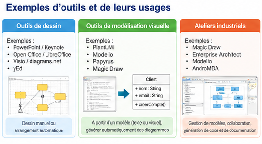
Dessin graphique, génération textuelle et référentiel de modèles ne rendent pas les mêmes services.
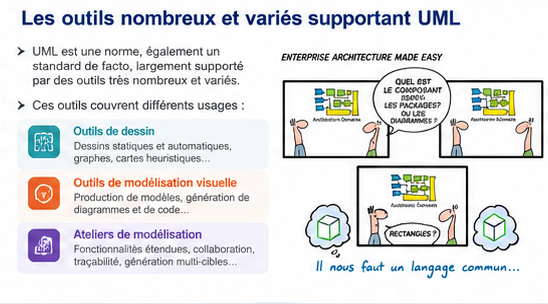
Les mêmes ovales peuvent recouvrir des réalités informatiques différentes
Le fichier mémorise des formes, coordonnées, styles et lignes.
Le référentiel conserve acteur, cas d’utilisation, association, identité, propriétés.
Une vue sélectionnée sur un ensemble d’éléments du modèle.
Un même élément se retrouve dans plusieurs diagrammes, sans être recréé.
Produire vite des graphes et varier leurs arrangements
Bibliothèque de formes, connecteurs, graphes éditables et arrangements automatiques.
Le placement automatique ne suffit pas à prouver la validité du modèle UML.
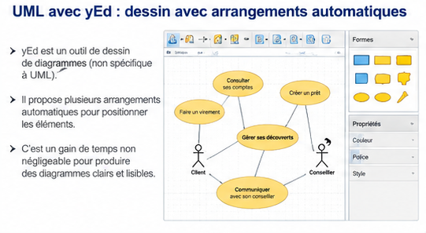
L’outil facilite l’alignement des formes et la lisibilité, mais conserve des primitives graphiques plutôt qu’un référentiel UML.
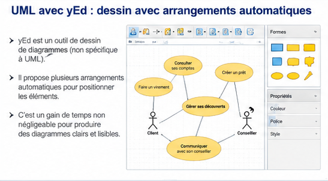
Ce que montre réellement l’exemple historique
Acteurs et cas d’utilisation sont placés puis réarrangés automatiquement par yEd.
Les dispositions automatiques améliorent la présentation d’un même graphe sans changer les éléments dessinés.
Le code du fichier décrit des ellipses, lignes, couleurs et textes : des primitives graphiques, pas un modèle sémantique UML.
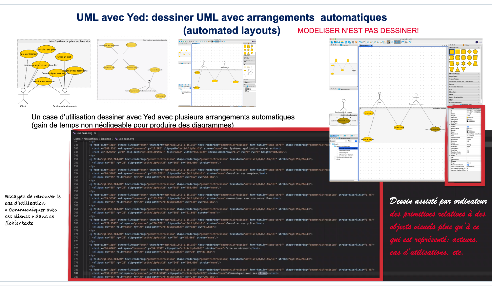
Une notation textuelle propre à l’outil, distincte de la norme UML
Un fichier texte contenant les participants, relations et instructions de rendu.
Des diagrammes exportables, notamment en SVG ou PNG.
Une source PlantUML ne constitue pas nécessairement un référentiel sémantique UML partagé entre vues.
@startuml
Alice -> Bob : demande
Bob --> Alice : réponse
@enduml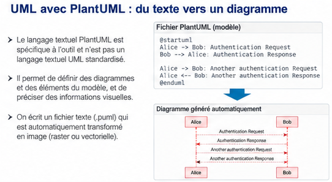
La description textuelle permet de générer une représentation ; le modèle sémantique partagé exige des mécanismes supplémentaires.
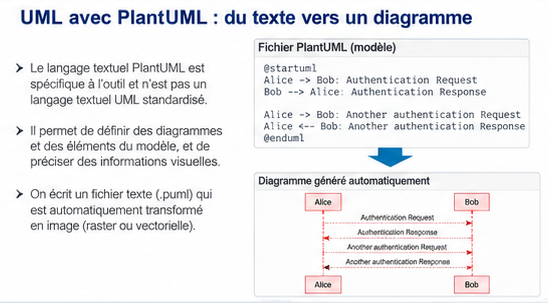
Une chaîne reproductible sans placement manuel
Créer un fichier source .puml ou .plantuml.
Exécuter un moteur PlantUML local ou intégré.
Vérifier diagramme, notation et sens métier ; exporter.
Un comportement dans le temps : participants, lignes de vie et messages
@startuml
participant Alice
participant Bob
Alice -> Bob : Authentification
Bob --> Alice : Réponse
@endumlAlignés horizontalement ; une ligne de vie descend sous chacun.
Flèches entre participants, interprétées du haut vers le bas.
L’ordre vertical exprime un ordre d’événements et d’échanges.
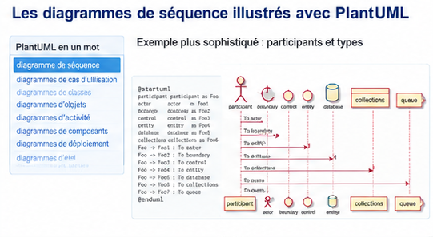
Lire les échanges, le sens des messages et leur ordre de haut en bas.
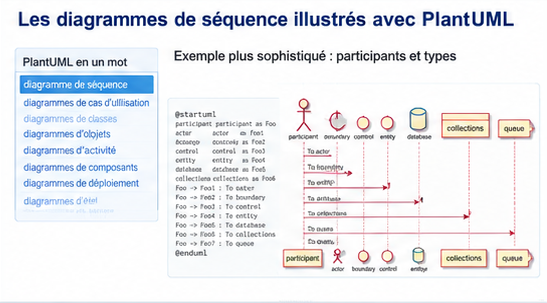
Un exemple plus élaboré pour identifier les rôles
Des catégories de participants peuvent être exprimées avec une syntaxe propre à PlantUML.
Le placement aide à comprendre le scénario, sans modifier à lui seul le sens des messages.
Les messages décrivent une interaction ; ils ne remplacent pas les contrats de services.
Rendre lisible la logique d’un scénario
@startuml
autonumber
actor Client
participant Service
Client -> Service : demander()
activate Service
alt accepté
Service --> Client : confirmation
else refusé
Service --> Client : erreur
end
loop 3 tentatives
Client -> Service : réessayer()
end
deactivate Service
@endumlalt / else pour les alternatives, loop pour la répétition.
Barres verticales indiquant une période d’exécution sur une ligne de vie.
Facilite la lecture des messages et la discussion d’un scénario.
Les fragments de contrôle expriment les scénarios conditionnels et les répétitions dans une interaction.
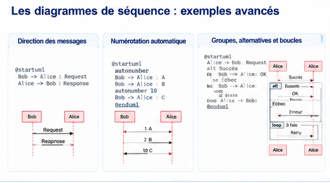
Des diagrammes cohérents à partir d’un référentiel partagé
Un acteur, un composant ou une classe peut apparaître dans plusieurs vues.
Typage, propriétés, règles et validation de la cohérence.
Recherche, traçabilité, documentation et transformations de modèles.
Des services informatiques autour du modèle
Éléments persistants et diagrammes complémentaires.
Contraintes, règles, validation, éventuellement OCL.
Documentation et code à partir du modèle.
Importer des informations à partir du code.
Modèle vers modèle, éventuellement entre langages.
Gestion des évolutions, versions et échanges.
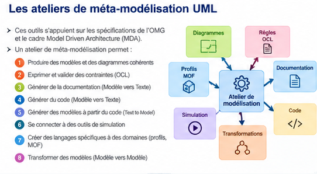
Vues cohérentes, contraintes, génération, transformations et échanges font de l’atelier autre chose qu’un éditeur graphique.
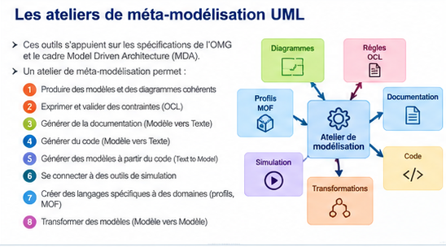
Ergonomie et installation comptent autant que les fonctionnalités
| Critère | Question de sélection |
|---|---|
| Conformité | Quels éléments UML sont effectivement pris en charge ? |
| Échanges | XMI ou autres mécanismes : que reste-t-il après import/export ? |
| Ergonomie | Combien d’opérations pour créer et maintenir plusieurs vues ? |
| Déploiement | OS, Java, extensions, dépendances, politique de mises à jour ? |
| Coût et pérennité | Licence, formation, communauté, maintenance, compatibilité ? |
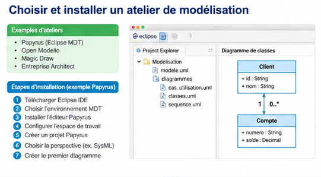
Les prérequis, l’ergonomie, le partage des modèles et la maintenance font partie du choix.
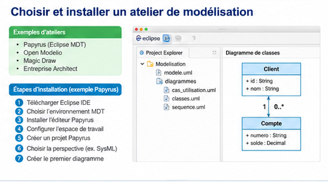
Trois exemples historiques d’ateliers UML
Environnement de modélisation intégré à l’écosystème Eclipse ; nombreuses extensions.
Atelier UML et autres langages de modélisation, avec des modalités de distribution à vérifier.
Atelier avancé utilisé pour les architectures et l’ingénierie par les modèles.
Un atelier utile doit aussi être praticable dans son environnement
Les prérequis et la compatibilité OS / Java peuvent bloquer une démonstration.
L’ergonomie influence le temps nécessaire à la réalisation d’un diagramme.
Adapter l’outil au public et aux objectifs ; prévoir une alternative.
La valeur d’un atelier : construire des vues sans dupliquer les concepts
Acteurs, composants et interactions identifiés une seule fois.
Diagrammes de cas d’utilisation, composants, séquences et activités reliés au même modèle.
Une évolution d’un élément se répercute dans les vues qui le présentent.
Actions, décisions, contrôles, objets et responsabilités
Relie les actions et exprime leur ordre d’exécution.
Nœuds de décision, fusion, séparation et synchronisation.
Les couloirs répartissent les responsabilités entre acteurs ou composants.
Des données ou objets peuvent circuler entre actions.
Des langages proches par certains usages, distincts par leur sémantique
Décrire un comportement et ses flux dans un modèle UML généraliste.
Exprimer des processus métier, événements, tâches, passerelles et collaborations.
Positionner les processus et services au sein d’une architecture d’entreprise.
Représenter fonctions, entrées, sorties, contrôles et mécanismes.
Même intention, conventions graphiques et modèles différents
Enchaînement d’activités et représentation de responsabilités.
Notations, concepts et règles propres à chaque langage.
Une traduction exige de traiter les différences sémantiques, pas de remplacer des symboles.
Une autre manière d’abstraire les processus
Décrire ce qui est réalisé, sans imposer le même niveau de détail procédural.
Inputs, Controls, Outputs, Mechanisms : entrées, contrôles, sorties et moyens.
Les fonctions se détaillent par raffinements successifs.
La modélisation devient une pratique organisée et collaborative
Un patrimoine de connaissances cohérent et partageable.
Portails de vues adaptés à des parties prenantes non spécialistes.
Rôles, méthodes, validation, traçabilité et exigences de qualité.
Versions et dépendances des éléments et modules de modèles.
Échange de données entre acteurs et outils hétérogènes.
Relier modèles, architecture, tests, code et exploitation.
Synthèse des acquis de la section outillage
Pourquoi dessiner ne suffit-il pas pour modéliser ?
Que mémorisent yEd, PlantUML et un atelier UML ?
Pourquoi le diagramme de séquence est-il dynamique ?
La syntaxe PlantUML est-elle normalisée par l’OMG ?
Quels critères d’ergonomie, de conformité et d’échange vérifier ?
Quand préférer UML, BPMN, ArchiMate ou IDEF0 ?
Au-delà des diagrammes statiques
Passer des vues figées à l’exploration interactive et multidimensionnelle.
Articuler modèles, graphes, règles, ontologies et données d’observation.
Relier des modèles de conception aux états observés en fonctionnement.
Coordonner plusieurs langages et représentations de systèmes complexes.
Une couche commune pour naviguer entre UML, BPMN, ArchiMate, ontologies, données et graphes.
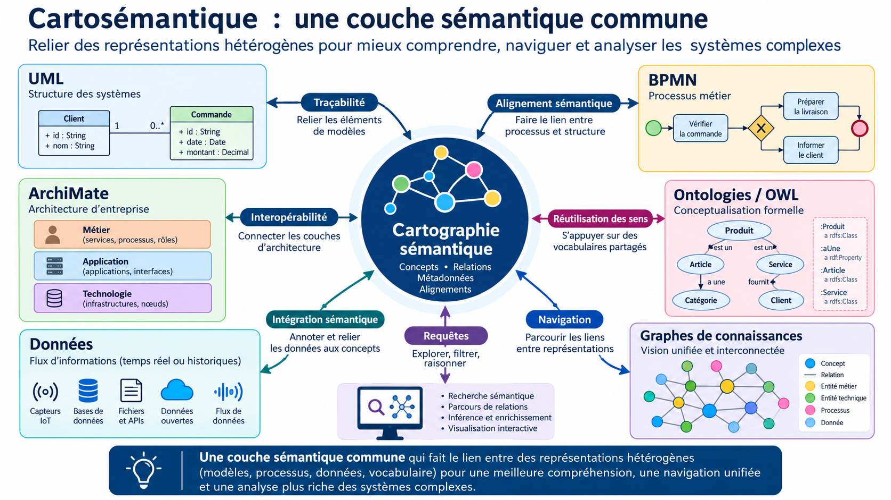
Graphes, jumeaux numériques, données temps réel, IA et hypermodèles au service des systèmes complexes.
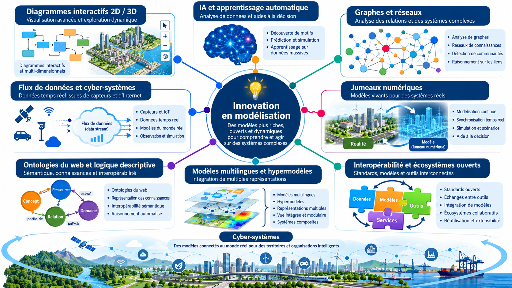
Explorer les recherches et les démonstrations autour des graphes, des ontologies et des hypermodèles.
Visualisation et exploration de systèmes complexes.
Perspectives de modélisation et de navigation sémantique.
Perspectives de modélisation et de navigation sémantique.
Perspectives de modélisation et de navigation sémantique.
Les illustrations historiques restent disponibles dans les ressources de cette archive ; la synthèse visuelle est présentée sur la diapositive suivante.
De la représentation statique aux systèmes de modèles connectés, explorable et évolutifs.
Explorer des diagrammes dynamiques 2D, 3D ou multidimensionnels ; naviguer dans un système complexe comme on utilise un GPS plutôt qu’une carte papier.
Relier analyse des données, théorie des graphes, réseaux de neurones et logique descriptive (ontologies du Web) pour interpréter et analyser les systèmes.
Exploiter des flux de données provenant de capteurs pour construire des modèles qui reflètent et accompagnent l’évolution du monde réel, au-delà des modèles de prescription.
Composer des descriptions modulaires, fédérer plusieurs langages et représentations, et conserver les liens de cohérence entre les vues.
Partir du besoin, puis décider du niveau de modélisation
Pour qui ? À quelle décision la représentation doit-elle contribuer ?
Simple dessin, diagramme généré ou référentiel de modèle ?
Sens, cohérence, échange, coût d’usage et durabilité.